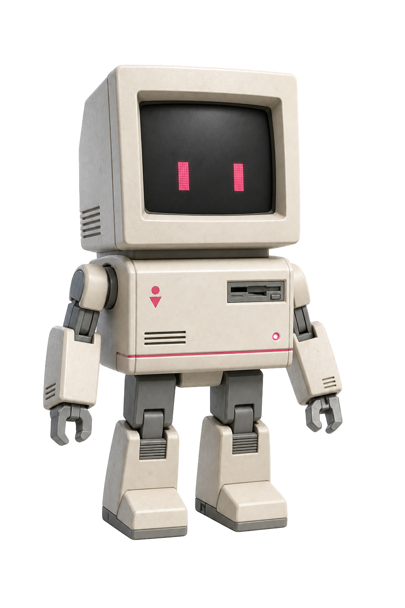

a11y-copilot

@deresjot · a11y-copilot
Damit mehr Menschen digitale Angebote selbstbestimmt wahrnehmen, verstehen und bedienen können. Die gemeinsame Arbeitsgrundlage unterstützt Menschen, Teams und KI-Assistenten von der ersten Entscheidung bis zu Prüfung und Betrieb.
Die Wirklichkeit
Menschen sollen ihr Ziel auf unterschiedlichen Wegen erreichen.
Wenn eine Aufgabe nur mit Maus, gutem Sehvermögen, hoher Konzentration oder perfekter Feinmotorik gelingt, stellt das Produkt eine unnötige Bedingung. Gute Accessibility-Arbeit beseitigt solche Bedingungen, damit mehr Menschen selbstständig handeln, teilhaben und Entscheidungen treffen können.
- sehenZoom, Kontrast, Blendung, Screenreader
- hörenUntertitel, Transkript, visuelle Signale
- bedienenTastatur, Touch, Sprache, Schalter
- verstehenklare Sprache, Struktur, Rückmeldung
- konzentrierenweniger Ablenkung, genug Zeit, Fehlertoleranz
- wechselnkleiner Bildschirm, laute Umgebung, nur eine freie Hand
Zugängliche Produkte geben Menschen mehr Möglichkeiten – und liefern auch Browsern, assistiven Technologien und agentischen Systemen klarere Strukturen und verlässlichere Bedienelemente.
Das Werkzeug
Entscheidungshilfe für digitale Teilhabe.
a11y-copilot stellt Menschen und KI-Assistenten dieselbe fachliche Grundlage bereit: normative Quellen, Prüfmethoden, skalierbare Rulesets und klare Grenzen automatisierter Aussagen. Semantisch klare, robust bedienbare Angebote helfen dabei nicht nur Menschen und assistiven Technologien; auch Browser-Automation und agentische Systeme können Inhalte, Zustände und Aktionen zuverlässiger erkennen. Das Werkzeug prüft nicht selbst und ersetzt weder Expertise noch Tests mit Menschen.
- A
Im KI-Chat starten
Kopiert die Startanweisung und die fachliche Hauptquelle als ein Startpaket. Danach stellst du deine konkrete Aufgabe.
- B
Selbst nachlesen
Öffne die fachliche Hauptquelle, folge ihren Vertiefungen und prüfe die verlinkten Primärquellen.
Arbeitsgrundlage ansehen - C
Benutzung verstehen
Die Anleitung erklärt die drei Wege für KI-Chat, Repository/Agent und eigenes Nachschlagen.
Anleitung öffnen - D
Im Projekt verwenden
Ein Coding-Agent liest zuerst die Agent-Anweisung und lädt danach nur die für die Aufgabe nötigen Quellen und Patterns.
Agent-Anweisung ansehen
So wird es benutzt
Weg wählen. Kontext geben. Ergebnis prüfen.
Für eine einzelne Frage reicht das Startpaket. In einem Repository steuert die Agent-Anweisung, welche Vertiefungen hinzukommen. Zum Nachschlagen kannst du jede Markdown-Datei direkt öffnen. Die Anleitung erklärt alle drei Wege ohne Werkzeugbindung.
Passenden Einstieg wählen
Startpaket für einen KI-Chat, Agent-Anweisung für ein Repository oder die Dokumente zum eigenen Nachschlagen verwenden.
Aufgabe konkret machen
Ziel, vollständigen Ablauf, Zustände, Material und bekannte Rahmenbedingungen nennen. So wird aus einer allgemeinen Frage ein prüfbarer Auftrag.
Quellen und Tests prüfen
Normative Aussagen belegen lassen und offene Prüfungen benennen. Die vorgeschlagene Lösung anschließend im echten Produkt überprüfen.
Verantwortungsvoll einsetzen
Was das Werkzeug leistet – und was weiterhin geprüft werden muss.
a11y-copilot hilft dabei, Analysen zu schärfen, Quellen einzuordnen und schlechte Abkürzungen sichtbar zu machen. Ob eine Lösung trägt, zeigt sich erst im vollständigen Ablauf, mit realen Browsern, assistiven Technologien und Menschen.
Ein Toollauf ist kein Audit. Eine Stichprobe ist kein Beleg für ungeprüfte Seiten. Und eine plausible Antwort ist keine normative Quelle.
Konformität braucht einen definierten Scope, reproduzierbare Evidenz und manuelle Prüfung. Rechtliche Einordnung und Tests mit Menschen bleiben eigene Aufgaben.